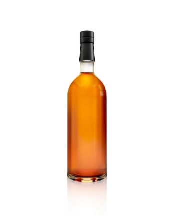

El cigarrillo (también llamado cigarro, y en España llamados pitillo) es uno de los formatos más populares para el consumo de tabaco. Un cigarrillo es una planta seca normalmente de tabaco picado envuelto por una hoja delgada de papel en forma de cilindro. Comúnmente presenta integrado un filtro para reducir los daños a la salud, pese a que se ha demostrado que este casi no reduce los daños del cigarrillo.
INTRODUCCION
El estanco es una institución de monopolio por parte de un estado de la producción, distribución, importación y venta de un bien. El término se origina en España, extendiéndose de ahí al resto de países de habla hispana. Actualmente, los estancos más comunes son los del tabaco, sellos postales y, en algunos países, licores espirituosos o cerveza. Los estancos españoles de tabacos tienen cerca de 400 años de historia, jugando un importante rol en la recaudación de impuestos para el estado mediante la venta de las labores del tabaco.
En España había dos estancos mayores: sal y tabaco, y varios estancos menores: aguardiente, salitre, azufre, pólvora, plomo, antimonio, mercurio, bermellón, goma laca, juegos de naipes y papel sellado. Uno de los estancos más antiguos (que al parecer data del siglo xiv), es el de la sal del reino de Aragón, que regulaba la venta y no permitía la importación. En 1543 se crea el de barajas, no solo a efectos fiscales, sino para garantizar que la impresión fuera correctapara evitar que los jugadores hicieran trampas.
El monopolio de expendedurías de tabaco y timbre mueve en España un negocio con un volumen de 12.500 millones de € al año según los datos del Comisionado para el Mercado de Tabacos. De estos 12.500 millones de €, el Estado español se beneficia de 9.400 millones de € que van a parar íntegramente a la hacienda pública, convirtiendo así al monopolio del Estado en un medio imprescindible. No obstante, esta no es la única función de los estancos. En la actualidad son un valioso aliado de la lucha contra el tabaquismo.
PRODUCTOS
TABACO 5,50€
CACHIMBA 28,75€
El narguile o narguil en inglés conocida como shisha, au shisha, o también hookah, huka, pipa de agua, pipa oriental o cachimba, es un dispositivo que se emplea para fumar tabaco de distintos sabores. La shisha/hookah es de origen persa, pero desde los primeros años del siglo xxi se ha ido implantando en países de la Unión Europea y América, ganando cierta popularidad entre un público de variada edad

ALCOHOL 14,99€
Las bebidas alcohólicas son aquellas bebidas que contienen etanol (alcohol etílico) en su composición. Las bebidas alcohólicas desempeñan un papel social importante en muchas culturas del mundo, debido a su efecto de droga recreativa depresora. La mayoría de los países tienen leyes que regulan la producción, venta y consumo de estas bebidas. Una de ellas es que, por lo general, se restringe su venta y consumo a menores de edad.

VAPES 12,75€
El cigarrillo electrónico (también, cigarro electrónico, en inglés «e-Cigarette», «vaporizador», «vapeador», «vape») es un sistema electrónico inhalador diseñado en su origen para simular el consumo de tabaco sin quemarlo directamente, diferenciándose del cigarrillo tradicional. Estos dispositivos utilizan una batería para calentar y vaporizar una solución líquida que el usuario inhala en forma de aerosol.